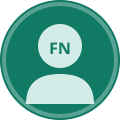
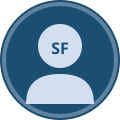

Voirie urbaine : contrôler l’authenticité d’un parc d’engins sur site
Lire le protocole
signw certifie les entreprises et prestataires sur preuves vérifiées, pour que chaque marché public ou privé soit attribué au bon acteur, au juste prix.
En l’absence de tiers de confiance, l’acheteur ne peut pas distinguer la vraie qualité d’une entreprise. signw rétablit l’équilibre en transformant les déclarations en preuves auditées.
Plus de 5,4 milliards FCFA de marchés sécurisés, 64 pièces justificatives contrôlées et 25 dossiers d’audit instruits selon le principe strict des 4 yeux : l’auditeur examine les preuves, l’administrateur délivre la certification, et le maître d’ouvrage attribue en toute sérénité.
Comprendre notre démarcheInspirée des fondements en économie de l’information (Akerlof, Spence, Stiglitz), la plateforme signw protège les prestataires sérieux et sécurise la commande publique au Cameroun.
Les entreprises compétentes sont pénalisées par les devis irréalistes d’entreprises fantômes. Les déclarations sur l’honneur invérifiées (engins loués à la journée ou matériel inexistant) génèrent retards et abandons de chantiers.
Les entreprises rigoureuses émettent un signal officiel impossible à falsifier : badge Or, Argent ou Bronze accompagné d’un score pondéré (0–100) issu de l’audit humain des cartes grises, bilans ONECCA et PV de réception.
Le maître d’ouvrage simule en un clic l’adéquation entre le budget de son appel d’offres, le chiffre d’affaires moyen sur 3 ans et le parc matériel vérifié de chaque prestataire candidat.
Chaque dossier d’entreprise est noté sur 100 points après contrôle documentaire des pièces officielles et visite physique sur site.
Un modèle extensible adapté aux spécificités techniques, financières et matérielles de chaque filière économique.
Bâtiments collectifs, routes, terrassement, ouvrages d’art, adduction d’eau et assainissement. 14 entreprises actives référencées.
Réseaux électriques MT/BT, centrales solaires photovoltaïques et éclairage public. 6 prestataires qualifiés sur preuves.
Aménagements hydro-agricoles, magasins de stockage, unités de transformation et pistes rurales. 4 acteurs certifiés.
Extension vers la fibre optique et les datacenters, les plateaux hospitaliers biomédicaux et la logistique portuaire lourde.
Un processus transparent, rigoureux et indépendant garantissant le principe des 4 yeux de bout en bout.
L’entreprise renseigne son formulaire sectoriel et dépose ses pièces administratives, bilans ONECCA et titres de propriété du matériel.
Nos auditeurs assermentés inspectent les engins sur le terrain et rendent un avis technique. L’administrateur valide ensuite la décision.
Le certificat officiel sécurisé est publié. Le maître d’ouvrage simule l’adéquation projet/budget et contractualise avec le meilleur acteur.
Rejoignez la première communauté d’acteurs économiques certifiés sur preuves au Cameroun. Valorisez votre parc matériel et vos bilans audités ou vérifiez instantanément vos prestataires.
Consultez nos secteurs couverts et un aperçu des entreprises qualifiées inscrites à l’annuaire transparent signw.
Une gouvernance claire séparant l’entreprise candidate, le maître d’ouvrage, l’auditeur terrain et la décision finale.
Dépose ses justificatifs sectoriels (RCCM, bilans, cartes grises) et valorise son certificat SGW lors des appels d’offres.

Consulte l’annuaire transparent, compare jusqu’à 3 prestataires et simule l’adéquation budget/capacité avant attribution.
Contrôle chaque pièce justificative auprès des organismes émetteurs, réalise la visite terrain et émet sa recommandation.

Supervise le barème sectoriel, veille au secret des pièces comptables et garantit l’impartialité de chaque certification.
Délivrée pour 12 mois avec actualisation annuelle des bilans N-1 et des attestations fiscales et sociales.
Des acteurs publics et privés engagés pour la transparence contractuelle au Cameroun.
Tout savoir sur le protocole d’audit humain, la confidentialité de vos états financiers et la vérification des certificats.
Non. signw n’est pas un organisme d’audit automatisé unilatéral. Elle organise le dépôt rigoureux des preuves (RCCM, bilans ONECCA, cartes grises, PV signés), fait vérifier ces pièces par une équipe d’auditeurs assermentés, sépare l’instruction de la décision finale (principe des 4 yeux) et publie le résultat en toute transparence.
La certification signw est délivrée pour une durée de 12 mois. Chaque année, l’entreprise doit déposer ses bilans N-1 récents et mettre à jour ses attestations fiscales et sociales pour renouveler son badge.
Absolument pas. signw applique une politique stricte de confidentialité : seules les conclusions (score global de confiance, validité, niveau de certification, liste des attestations vérifiées avec date) sont publiques. Vos états financiers et pièces brutes ne sont accessibles qu’aux auditeurs habilités.
Chaque certificat comporte un code public unique au format SGW-AAAA-NNNNN (ex. SGW-2026-00481) et un QR code officiel. Toute personne peut saisir ce code pour consulter instantanément le statut actif, suspendu ou expiré du document.
La certification comprend 3 niveaux principaux : Niveau Or (Score ≥ 85), Niveau Argent (70 à 84) et Niveau Bronze (55 à 69). En cas de non-conformité mineure sur un point non bloquant, une certification « Avec réserves » peut être attribuée temporairement.
Recevez les alertes d’appels d’offres qualifiés, l’ouverture des nouveaux secteurs (Numérique, Santé, Logistique) et les évolutions du référentiel signw.
Analyses sectorielles, bonnes pratiques de commande publique et retours d’expérience de nos équipes d’audit.
Nos équipes vous accueillent à Douala et Yaoundé pour déposer un dossier de qualification ou vérifier un prestataire.
45 Boulevard de la Liberté, Akwa, Douala • Immeuble Émergence, Centre Administratif, Yaoundé
+237 233 42 00 00
contact@signw.cm